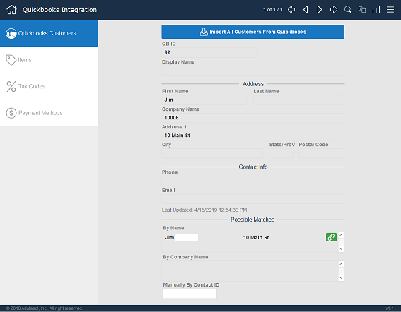
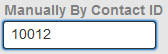

Set up QuickBooks Customers
Use these steps to set up your QuickBooks integration with FrameReady.
Tip: If you are new to QuickBooks, then you may not have any QuickBooks customers to import; you could skip the customer import step. If you already have customers in QuickBooks and FrameReady, then expect to spend several hours linking your data.
-
In order to send data to Quickbooks from FrameReady, a few sections are required to be set up first with data from Quickbooks:
-
Customers (only if customers already exist in Quickbooks)
-
Items: Products and services set up in Quickbooks for use on line items of invoices
-
Tax Codes
-
Payment Methods
-
-
You are responsible for reviewing the imported QuickBooks Online data and linking it to your FrameReady data.
-
If you already have customers in QuickBooks and FrameReady, then expect to spend several hours linking your data.
How to open the QuickBooks Customers Set up Screen
This process imports all customer records into a temporary storage area in the settings file. After the import is complete, the process automatically attempts to match the customer record from Quickbooks to the Contact record in FrameReady. This automated process first attempts to match on the contact name and then attempts to match on the company name. If only one match is found, then the automation marks the FrameReady Contact record with the Quickbooks ID. This ID is required for all transactions between FrameReady and Quickbooks.
-
Log in as level4 and Open the QuickBooks Settings.
-
When the QuickBooks Integration window appears, click the Gear icon (top right).

-
If not already highlighted, then click the QuickBooks Customers button in the left sidebar.
-
The Customers portion of the integration appears.

Top Navigation Controls

-
First Record
-
Previous Record
-
Next Record
-
Last Record
-
Find
-
Show All
-
Sort
-
List View
1) Import your QuickBooks Customers
-
During initial set up, there are no QuickBooks customers listed. Click the Import All Customers From QuickBooks button.
-
The integration connects to your QuickBooks account and the import/matching process begins.
-
This is an scripted process to import your existing QuickBooks customers (tested with up to 1000 customers) and automatically attempts to link those QuickBooks customer with the correct FrameReady customer.
-
The process matches on a several criteria (company name, address, etc.).
-
If a match is found, then the QuickBooks ID is added to the FrameReady customer record, after which all transactions are associated with the Quickbooks customer (not duplicated).
-
If the process does not find a match for any reason, e.g. spelling differences, then the FrameReady customer will not have a QuickBooks ID. A manual match must be made instead.
-
Caution: If a manual match is not made, then any transaction pushed from FrameReady to QuickBooks for that specific FrameReady customer may result in a duplicate QuickBooks customer. The integration does not know the difference between an unmatched customer and a new customer.
2) Review each Customer Imported from your QuickBooks
-
Use the top navigation controls to move through the records, or click the List View button to select a specific customer.
-
The customer information you see was imported from QuickBooks.
In the Possible Matches section, you may see a list of one or more matches to FrameReady customers (grouped into matched-by-Name and matched-by-Company Name).
Click the blue link icon to manually select which of the possible FrameReady contacts match the Quickbooks customer record. The "Link" icon turns green after manually making the selection. -
A green link icon indicates that the current record is linked:
Clicking the green "Link" icon removes the association between the Quickbooks customer record and the FrameReady Contact. -
A blue link icon indicates that the current record is not linked:
-
If the Possible Matches section lists no matches, and yet the customer is in FrameReady, then use the Manually By Contact ID field to enter that customer's FrameReady Contact ID number.

Click out of the field and the integration displays the FrameReady contact name. Click the blue link icon (it changes to green) to create the link. -
Repeat until all customer records have been linked.
Next Steps
Import Your Chart of Accounts
© 2023 Adatasol, Inc.